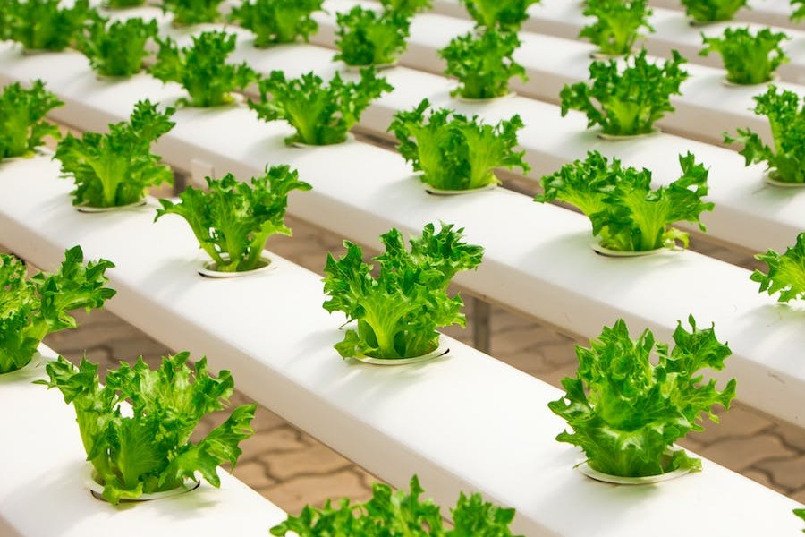
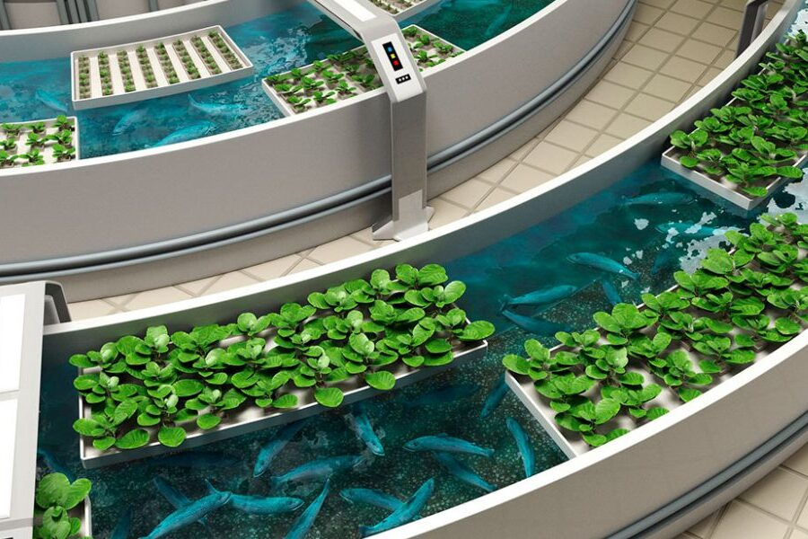
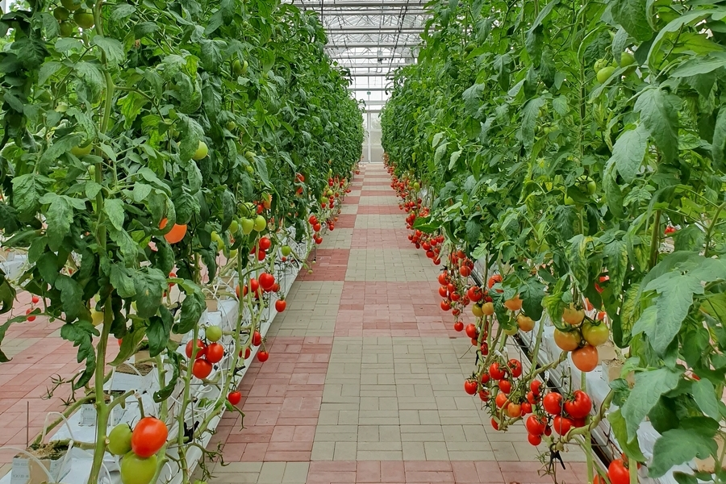

Modelos de cultivo eficientes:
O cultivo eficiente refere-se a práticas agrícolas que visam maximizar a produção de alimentos, fibras ou outros produtos agrícolas, utilizando recursos de forma eficiente. Isso significa obter altos rendimentos por unidade de área cultivada, minimizando o desperdício e reduzindo os impactos negativos ao meio ambiente.
Alguns exemplos desses cultivos que são mais eficientes em termos de uso de recursos e produtividade:
Hidroponia
A hidroponia é um método de cultivo sem solo, no qual as plantas são cultivadas em soluções nutritivas em vez de solo. Esse sistema permite um controle preciso dos nutrientes, do ambiente de crescimento e do uso de água, resultando em um cultivo altamente eficiente e economizando recursos.
Aquaponia
Combina a criação de peixes em tanques com o cultivo de plantas em sistemas hidropônicos. Os resíduos dos peixes são convertidos em nutrientes para as plantas, enquanto as plantas filtram e purificam a água para os peixes.
Agricultura vertical
A agricultura vertical envolve o cultivo de plantas em camadas verticais, geralmente em estruturas fechadas ou em ambientes controlados. Esse modelo permite o uso máximo do espaço, reduzindo a necessidade de terra, além de possibilitar o controle preciso das condições de cultivo, como luz, umidade e temperatura.